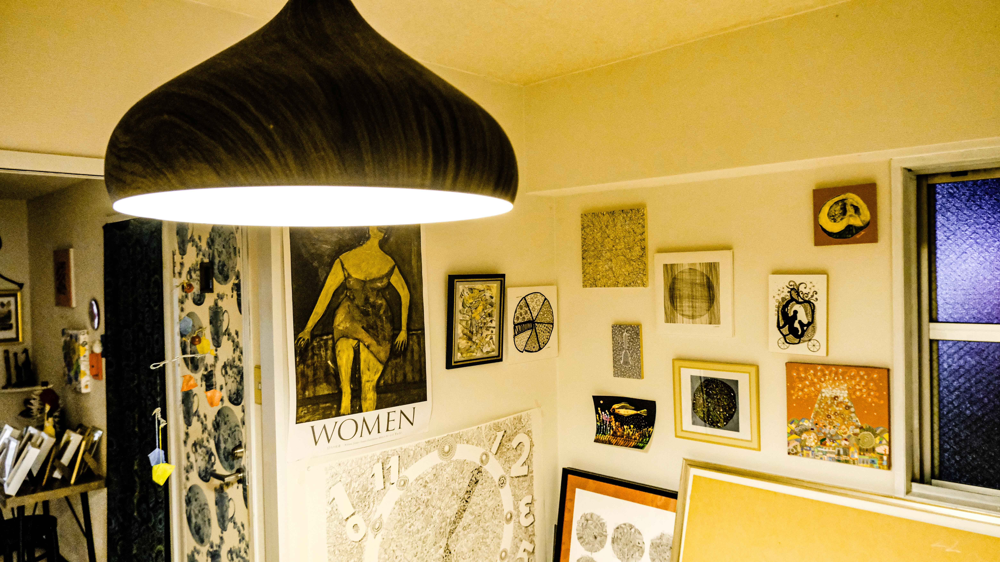
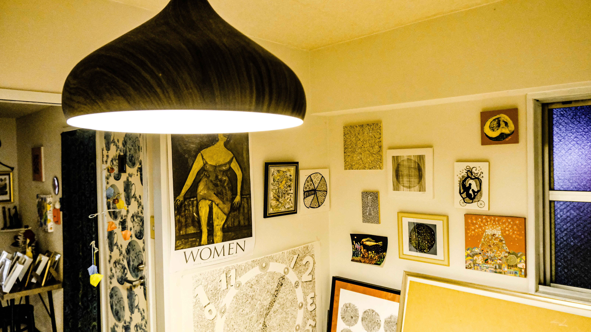
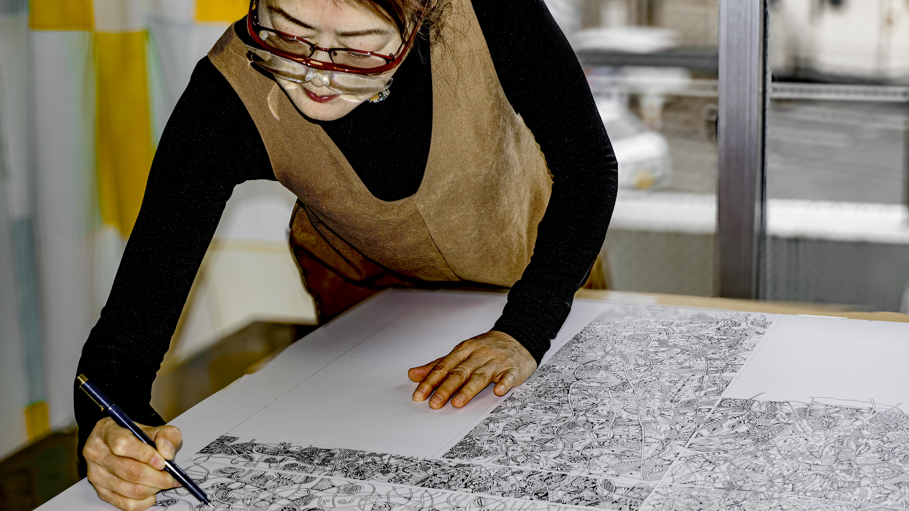
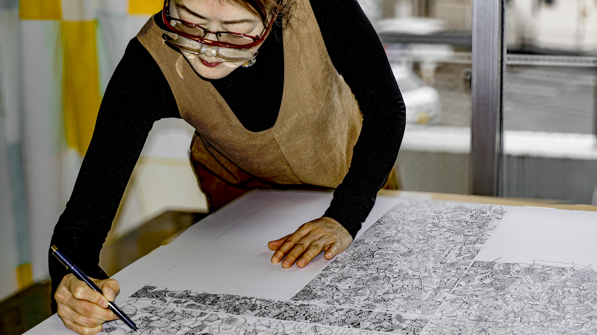

YUME
KIRAKO
Meet Yume Kirako, a talented Japanese artist hailing from Isehara, who finds joy in infusing everyday life with her artistic expression. Known for her vibrant paintings that capture the essence of daily routines and the beauty of simple moments, Yume Kirako's work resonates with a sense of tranquility and appreciation for the ordinary. Whether she's depicting bustling market scenes, serene landscapes, or intimate portraits, Yume's art reflects her deep connection to her surroundings and her passion for sharing the subtle yet profound moments of life through her unique artistic lens.
WWW.YUMEKIRAKO-JP.COM
OUTPUT
➳ Art + Lifestyle Photography
➳ Social Strategy
➳ Web Design
➳ UI/UX
 


 
